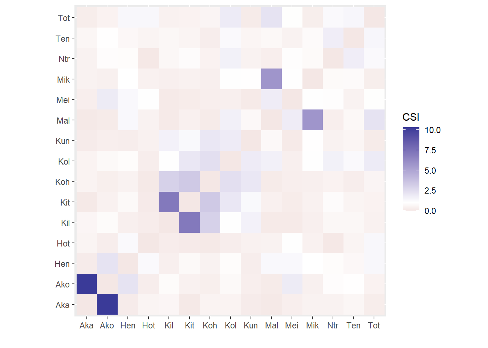
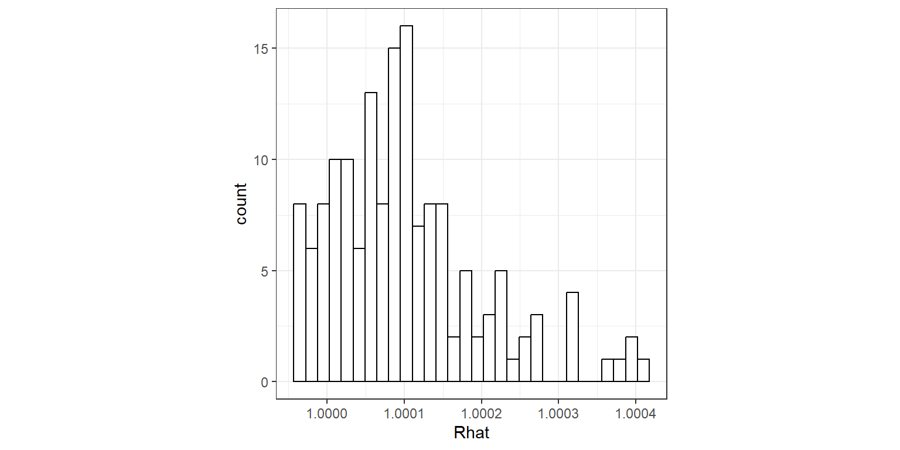

2 メス同士のCSIの算出
2.1 CSIの定義
ここでは、TYとのCSIを算出する。
CSIの算出式は以下の通り。なお、\(i = 1,2,3,...,N\)はメスのIDを表す。\(P_i\)の算出の際には互いに毛づくろいしているポイントは除いた。対象としたのは2018年時点で6歳以上だった非発情の個体である。
- \(G_{ij}\): メスiとメスjの毛づくろい時間割合 (iとjが毛づくろいしたポイント数/iとj総ポイント数)
- \(P_{i}\): メスiとメスjの近接時間割合 (3m以内にいとjがいたポイント数/iまたはjが地上採食または休息したポイント数)
- \(\overline{G}: \frac{1}{N} \sum^{N}_{i=1}G_{i}\)
- \(\overline{P}: \frac{1}{N} \sum^{N}_{i=1}P_{i}\)
\[ CSI_{i} = \frac{\left(\frac{G_{i}}{\overline{G}} +\frac{P_{i}}{\overline{P}}\right)}{2} \;\;(i = 1,2,\dots,N) \]
使用するのは2018年交尾期、2019年交尾期、2019年非交尾期、2021年非交尾期、2022年非交尾期のデータである。
2.2 データの加工
交尾期のデータについて、追跡個体が発情しているかの列を追加し、発情していない日のデータのみを抽出する(focal_18m_b、focal_19m_b)。
focal_18m %>%
left_join(female_18m %>%
rename(subject = femaleID) %>%
select(date, subject, rs2) , by = c("date", "subject")) %>%
filter(rs2 == "0") -> focal_18m_b
focal_19m %>%
left_join(female_19m %>%
rename(subject = femaleID) %>%
select(date, subject, rs2) , by = c("date", "subject")) %>%
filter(rs2 == "0") -> focal_19m_b2.3 CSIの算出(全期間)
算出するメスのIDは、全期間のデータがあった以下の通り。
femaleID <- sort(c("Kil","Mik","Koh","Aka","Ten","Ntr","Hen","Hot","Tot","Mei","Ako","Kol","Mal","Kit","Kun"))2.3.1 毛づくろい時間割合の算出
focal_all <- bind_rows(focal_18m_b, focal_19m_b, focal_19nm, focal_21nm, focal_22nm)
## 毛づくろい相手を表す列を作成
focal_all %>%
mutate(groom = ifelse(groomer == subject,groomee,groomer),
groom2 = ifelse(groomer2 == subject,groomee2,groomer2)) -> focal_all_b各メスの追跡時間(総瞬間サンプリングポイント数)を算出する。
focal_all_b %>%
filter(subject %in% femaleID) %>%
group_by(subject) %>%
summarise(dur = n()) -> focal_duration対象となるメスと毛づくろいしていたポイントを抽出する。
focal_all_b %>%
filter(activity == "G") %>%
filter(subject %in% femaleID) %>%
select(date, no_focal, time, subject, groom, groom2) %>%
pivot_longer(cols = c("groom","groom2"),
names_to = "groom", values_to = "ID") %>%
filter(ID %in% femaleID) -> groom_pairs最後に、毛づくろい時間割合を算出してマトリックスにする。
2.3.2 近接時間割合の算出
続いて、近接時間割合を算出する。なお、互いに毛づくろいをしていた時間は除く点は注意が必要である。
まず、地上採食・休息・毛づくろいのポイントのみを抽出する。
focal_all_b %>%
filter(activity %in% c("F","R","G") & T_G == "G") %>%
select(no_focal, subject, x0_1m:x1_3m, groom, groom2, study_period) %>%
replace_na(list(groom = "NA", groom2 = "NA")) -> focal_prox続いて、上記のうち各メス同士が毛づくろいをしていなかったポイント数を算出する(= 分母)。
prox_denom <- matrix(nrow = length(femaleID), ncol = length(femaleID))
for(i in seq_along(femaleID)){
for(j in seq_along(femaleID)){
prox_denom[i,j] <- focal_prox %>%
filter(subject == femaleID[i]) %>%
filter(groom != femaleID[j] & groom2 != femaleID[j]) %>%
nrow()
}
}
## 転置行列と足す
prox_denom2 <- prox_denom + t(prox_denom)
## 対角成分は0にする
diag(prox_denom2) <- 0
rownames(prox_denom2) <- femaleID
colnames(prox_denom2) <- femaleID続いて、各メスが毛づくろいをしていなかったポイントのうち近接していたポイント数を算出する。
prox_numer <- matrix(nrow = length(femaleID), ncol = length(femaleID))
for(i in seq_along(femaleID)){
for(j in seq_along(femaleID)){
prox_numer[i,j] <- focal_prox %>%
filter(subject == femaleID[i]) %>%
filter(groom != femaleID[j] & groom2 != femaleID[j]) %>%
filter(str_detect(x0_1m, femaleID[j])|str_detect(x1_3m, femaleID[j])) %>%
nrow()
}
}
## 転置行列と足す
prox_numer2 <- prox_numer + t(prox_numer)
## 対角成分は0にする
rownames(prox_numer2) <- femaleID
colnames(prox_numer2) <- femaleID最後に、これらを基に近接時間割合を算出する。
2.3.3 CSIの算出
最後に、CSIを算出する。ここでは、aninetパッケージのdyadic_csi()関数を用いる。
library(aninet)
CSI_female <- dyadic_csi(list(groom_mat, prox_mat))
colnames(CSI_female) <- femaleID
rownames(CSI_female) <- femaleIDCSIを図示すると以下のようになる。
CSI_female %>%
data.frame() %>%
rownames_to_column(var = "ID1") %>%
pivot_longer(2:16,
names_to = "ID2",
values_to = "CSI") %>%
ggplot(aes(x = ID1, y = ID2))+
geom_tile(aes(fill = CSI))+
scale_fill_gradient2(high = muted("blue"), low = muted("red"), mid = "white",
midpoint = 1)+
theme(aspect.ratio = 1)+
labs(x = "", y = "")
2.4 CSIの算出(2018交尾期～2019交尾期)
算出するメスのIDは、この期間のデータがあった以下の通り。
femaleID2 <- sort(c("Kil","Mik","Koh","Aka","Tam","Ten","Ntr","Hen","Hot","Tot","Mei","Ako","Kol","Mal","Kit","Kun"))2.4.1 毛づくろい時間割合の算出
focal_fh <- bind_rows(focal_18m_b, focal_19m_b, focal_19nm)
## 毛づくろい相手を表す列を作成
focal_fh %>%
mutate(groom = ifelse(groomer == subject,groomee,groomer),
groom2 = ifelse(groomer2 == subject,groomee2,groomer2)) -> focal_fh_b各メスの追跡時間(総瞬間サンプリングポイント数)を算出する。
focal_fh_b %>%
filter(subject %in% femaleID2) %>%
group_by(subject) %>%
summarise(dur = n()) -> focal_duration_fh対象となるメスと毛づくろいしていたポイントを抽出する。
focal_fh_b %>%
filter(activity == "G") %>%
filter(subject %in% femaleID2) %>%
select(date, no_focal, time, subject, groom, groom2) %>%
pivot_longer(cols = c("groom","groom2"),
names_to = "groom", values_to = "ID") %>%
filter(ID %in% femaleID2) -> groom_pairs_fh最後に、毛づくろい時間割合を算出してマトリックスにする。
2.4.2 近接時間割合の算出
続いて、近接時間割合を算出する。なお、互いに毛づくろいをしていた時間は除く点は注意が必要である。
まず、地上採食・休息・毛づくろいのポイントのみを抽出する。
focal_fh_b %>%
filter(activity %in% c("F","R","G") & T_G == "G") %>%
select(no_focal, subject, x0_1m:x1_3m, groom, groom2, study_period) %>%
replace_na(list(groom = "NA", groom2 = "NA")) -> focal_prox_fh続いて、上記のうち各メス同士が毛づくろいをしていなかったポイント数を算出する(= 分母)。
prox_denom_fh <- matrix(nrow = length(femaleID2), ncol = length(femaleID2))
for(i in seq_along(femaleID2)){
for(j in seq_along(femaleID2)){
prox_denom_fh[i,j] <- focal_prox_fh %>%
filter(subject == femaleID2[i]) %>%
filter(groom != femaleID2[j] & groom2 != femaleID2[j]) %>%
nrow()
}
}
## 転置行列と足す
prox_denom_fh2 <- prox_denom_fh + t(prox_denom_fh)
## 対角成分は0にする
diag(prox_denom_fh2) <- 0
rownames(prox_denom_fh2) <- femaleID2
colnames(prox_denom_fh2) <- femaleID2続いて、各メスが毛づくろいをしていなかったポイントのうち近接していたポイント数を算出する。
prox_numer_fh <- matrix(nrow = length(femaleID2), ncol = length(femaleID2))
for(i in seq_along(femaleID2)){
for(j in seq_along(femaleID2)){
prox_numer_fh[i,j] <- focal_prox_fh %>%
filter(subject == femaleID2[i]) %>%
filter(groom != femaleID2[j] & groom2 != femaleID2[j]) %>%
filter(str_detect(x0_1m, femaleID2[j])|str_detect(x1_3m, femaleID2[j])) %>%
nrow()
}
}
## 転置行列と足す
prox_numer_fh2 <- prox_numer_fh + t(prox_numer_fh)
## 対角成分は0にする
rownames(prox_numer_fh2) <- femaleID2
colnames(prox_numer_fh2) <- femaleID2最後に、これらを基に近接時間割合を算出する。
2.4.3 CSIの算出
最後に、CSIを算出する。ここでは、aninetパッケージのdyadic_csi()関数を用いる。
library(aninet)
CSI_fh_female <- dyadic_csi(list(groom_mat_fh, prox_mat_fh))
colnames(CSI_fh_female) <- femaleID2
rownames(CSI_fh_female) <- femaleID2CSIを図示すると以下のようになる。
CSI_fh_female %>%
data.frame() %>%
rownames_to_column(var = "ID1") %>%
pivot_longer(2:16,
names_to = "ID2",
values_to = "CSI") %>%
ggplot(aes(x = ID1, y = ID2))+
geom_tile(aes(fill = CSI))+
scale_fill_gradient2(high = muted("blue"), low = muted("red"), mid = "white",
midpoint = 1)+
theme(aspect.ratio = 1)+
labs(x = "", y = "")
2.5 CSIの算出(Tam生存前まで)
算出するメスのIDは、この期間のデータがあった以下の通り。
femaleID2 <- sort(c("Kil","Mik","Koh","Aka","Tam","Ten","Ntr","Hen","Hot","Tot","Mei","Ako","Kol","Mal","Kit","Kun"))2.5.1 毛づくろい時間割合の算出
focal_withTam <- bind_rows(focal_18m_b, focal_19m_b, focal_19nm, focal_20m, focal_21nm) %>%
mutate(date = as_date(date)) %>%
filter(date <= "2021-03-14")
## 毛づくろい相手を表す列を作成
focal_withTam %>%
mutate(groom = ifelse(groomer == subject,groomee,groomer),
groom2 = ifelse(groomer2 == subject,groomee2,groomer2)) -> focal_withTam_b各メスの追跡時間(総瞬間サンプリングポイント数)を算出する。
focal_withTam_b %>%
filter(subject %in% femaleID2) %>%
group_by(subject) %>%
summarise(dur = n()) -> focal_duration_withTam対象となるメスと毛づくろいしていたポイントを抽出する。
focal_withTam_b %>%
filter(activity == "G") %>%
filter(subject %in% femaleID2) %>%
select(date, no_focal, time, subject, groom, groom2) %>%
pivot_longer(cols = c("groom","groom2"),
names_to = "groom", values_to = "ID") %>%
filter(ID %in% femaleID2) -> groom_pairs_withTam最後に、毛づくろい時間割合を算出してマトリックスにする。
2.5.2 近接時間割合の算出
続いて、近接時間割合を算出する。なお、互いに毛づくろいをしていた時間は除く点は注意が必要である。
まず、地上採食・休息・毛づくろいのポイントのみを抽出する。
focal_withTam_b %>%
filter(activity %in% c("F","R","G") & T_G == "G") %>%
select(no_focal, subject, x0_1m:x1_3m, groom, groom2, study_period) %>%
replace_na(list(groom = "NA", groom2 = "NA")) -> focal_prox_withTam続いて、上記のうち各メス同士が毛づくろいをしていなかったポイント数を算出する(= 分母)。
prox_denom_withTam <- matrix(nrow = length(femaleID2), ncol = length(femaleID2))
for(i in seq_along(femaleID2)){
for(j in seq_along(femaleID2)){
prox_denom_withTam[i,j] <- focal_prox_withTam %>%
filter(subject == femaleID2[i]) %>%
filter(groom != femaleID2[j] & groom2 != femaleID2[j]) %>%
nrow()
}
}
## 転置行列と足す
prox_denom_withTam2 <- prox_denom_withTam + t(prox_denom_withTam)
## 対角成分は0にする
diag(prox_denom_withTam2) <- 0
rownames(prox_denom_withTam2) <- femaleID2
colnames(prox_denom_withTam2) <- femaleID2続いて、各メスが毛づくろいをしていなかったポイントのうち近接していたポイント数を算出する。
prox_numer_withTam <- matrix(nrow = length(femaleID2), ncol = length(femaleID2))
for(i in seq_along(femaleID2)){
for(j in seq_along(femaleID2)){
prox_numer_withTam[i,j] <- focal_prox_withTam %>%
filter(subject == femaleID2[i]) %>%
filter(groom != femaleID2[j] & groom2 != femaleID2[j]) %>%
filter(str_detect(x0_1m, femaleID2[j])|str_detect(x1_3m, femaleID2[j])) %>%
nrow()
}
}
## 転置行列と足す
prox_numer_withTam2 <- prox_numer_withTam + t(prox_numer_withTam)
## 対角成分は0にする
rownames(prox_numer_withTam2) <- femaleID2
colnames(prox_numer_withTam2) <- femaleID2最後に、これらを基に近接時間割合を算出する。
2.5.3 CSIの算出
最後に、CSIを算出する。ここでは、aninetパッケージのdyadic_csi()関数を用いる。
library(aninet)
CSI_withTam_female <- dyadic_csi(list(groom_mat_withTam, prox_mat_withTam))
colnames(CSI_withTam_female) <- femaleID2
rownames(CSI_withTam_female) <- femaleID2CSIを図示すると以下のようになる。
CSI_withTam_female %>%
data.frame() %>%
rownames_to_column(var = "ID1") %>%
pivot_longer(2:16,
names_to = "ID2",
values_to = "CSI") %>%
ggplot(aes(x = ID1, y = ID2))+
geom_tile(aes(fill = CSI))+
scale_fill_gradient2(high = muted("blue"), low = muted("red"), mid = "white",
midpoint = 1)+
theme(aspect.ratio = 1)+
labs(x = "", y = "")
2.6 CSIの算出(調査期間ごと)
2.6.1 毛づくろい時間割合の算出
各メスの追跡時間(総瞬間サンプリングポイント数)を算出する。
focal_all_b %>%
filter(subject %in% femaleID) %>%
group_by(subject, study_period) %>%
summarise(dur = n()) -> focal_duration_sp対象となるメスと毛づくろいしていたポイントを抽出する。
focal_all_b %>%
filter(activity == "G") %>%
filter(subject %in% femaleID) %>%
select(date, no_focal, time, subject, groom, groom2, study_period) %>%
pivot_longer(cols = c("groom","groom2"),
names_to = "groom", values_to = "ID") %>%
filter(ID %in% femaleID) -> groom_pairs最後に、毛づくろい時間割合を算出してマトリックスにする。
groom_mat_sp <- list()
sp <- unique(groom_pairs$study_period)
for(i in c(1,2,3,5)){
groom_mat_sp[[i]] <- df.to.mat(groom_pairs %>% filter(study_period == sp[i]),
actor = "subject",
receiver = "ID",
sym = T,
tob = focal_duration_sp %>% filter(study_period == sp[i]) %>%.$dur)
}
## 2021非交尾期はホタルがfemaleIDに含まれるメスと毛づくろいをしなかったので、別に求める。
groom_mat_sp[[4]] <- df.to.mat(groom_pairs %>% filter(study_period == sp[4]),
actor = "subject",
receiver = "ID",
sym = T,
tob = focal_duration_sp %>%
filter(study_period == sp[4]) %>%
filter(subject != "Hot") %>%
.$dur)
## ホタルの行列を追加
groom_mat_sp[[4]] %>%
data.frame() %>%
bind_rows(data.frame(row.names = "Hot")) %>%
mutate(Hot = 0L)-> groom_mat_sp4
## 行名と列名を並べ替え
groom_mat_sp4[15,1:15] <- 0
groom_mat_sp[[4]] <- groom_mat_sp4 %>%
as.matrix()
groom_mat_sp[[4]] <- groom_mat_sp[[4]][sort(rownames(groom_mat_sp[[4]])),sort(colnames(groom_mat_sp[[4]]))] 2.6.2 近接時間割合の算出
続いて、近接時間割合を算出する。なお、互いに毛づくろいをしていた時間は除く点は注意が必要である。
続いて、上記のうち各メス同士が毛づくろいをしていなかったポイント数を算出する(= 分母)。
mat <- matrix(nrow = length(femaleID), ncol = length(femaleID))
prox_denom_sp <- list(mat,mat,mat,mat,mat)
prox_denom_sp2 <- list(mat,mat,mat,mat,mat)
for(i in seq_along(sp)){
for(j in seq_along(femaleID)){
for(k in seq_along(femaleID))
prox_denom_sp[[i]][j,k] <- focal_prox %>%
filter(study_period == sp[i]) %>%
filter(subject == femaleID[j]) %>%
filter(groom != femaleID[k] & groom2 != femaleID[k]) %>%
nrow()
diag(prox_denom_sp[[i]]) <- 0
rownames(prox_denom_sp[[i]]) <- femaleID
colnames(prox_denom_sp[[i]]) <- femaleID
prox_denom_sp2[[i]] <- prox_denom_sp[[i]] + t(prox_denom_sp[[i]])
}
}続いて、各メスが毛づくろいをしていなかったポイントのうち近接していたポイント数を算出する。
prox_numer_sp <- list(mat,mat,mat,mat,mat)
prox_numer_sp2 <- list(mat,mat,mat,mat,mat)
for(i in seq_along(sp)){
for(j in seq_along(femaleID)){
for(k in seq_along(femaleID))
prox_numer_sp[[i]][j,k] <- focal_prox %>%
filter(study_period == sp[i]) %>%
filter(subject == femaleID[j]) %>%
filter(groom != femaleID[k] & groom2 != femaleID[k]) %>%
filter(str_detect(x0_1m, femaleID[k])|str_detect(x1_3m, femaleID[k])) %>%
nrow()
diag(prox_numer_sp[[i]]) <- 0
rownames(prox_numer_sp[[i]]) <- femaleID
colnames(prox_numer_sp[[i]]) <- femaleID
prox_numer_sp2[[i]] <- prox_numer_sp[[i]] + t(prox_numer_sp[[i]])
}
}最後に、これらを基に近接時間割合を算出する。
2.6.3 CSIの算出
最後に、CSIを算出する。ここでは、aninetパッケージのdyadic_csi()関数を用いる。
library(aninet)
CSI_sp_female <- list(mat,mat,mat,mat,mat)
for(i in seq_along(sp)){
CSI_sp_female[[i]] <- dyadic_csi(list(groom_mat_sp[[i]], prox_mat_sp[[i]]))
colnames(CSI_sp_female[[i]]) <- femaleID
rownames(CSI_sp_female[[i]]) <- femaleID
}CSIを図示すると以下のようになる。
CSI_sp_df <- data.frame()
for(i in seq_along(sp)){
CSI_df <- CSI_sp_female[[i]] %>%
data.frame() %>%
rownames_to_column(var = "ID1") %>%
pivot_longer(2:16,
names_to = "ID2",
values_to = "CSI") %>%
mutate(study_period = sp[i])
CSI_sp_df <- bind_rows(CSI_sp_df, CSI_df)
}
CSI_sp_df %>%
ggplot(aes(x = ID1, y = ID2))+
geom_tile(aes(fill = CSI))+
scale_fill_gradient2(high = muted("blue"), low = muted("red"), mid = "white",
midpoint = 1)+
theme(aspect.ratio = 1,
axis.text.x = element_text(angle = -45,
size = 7),
axis.text.y = element_text(angle = -45,
size = 7))+
labs(x = "", y = "")+
facet_rep_wrap(~study_period, repeat.tick.labels = TRUE)
各調査期間のCSIマトリックス間の相関は以下の通り。